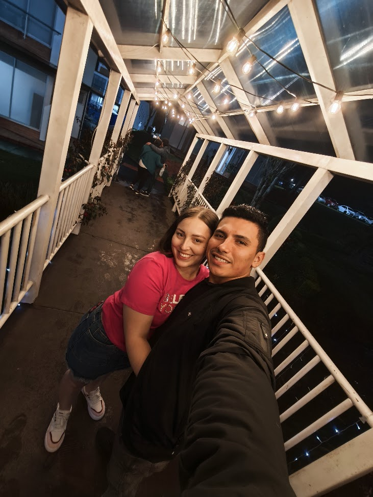

Ya llevamos un año Juntos, y aunque cada día a tu lado es especial, quiero pedirte algo más: ¿quieres ser mi San Valentín no solo este año, sino todos los que están por venir y seguir llenando mi mundo de amor?
Eres mi razón para sonreír, mi complicidad y mi amor. Te amo más que ayer, pero menos que mañana.
este año a tu lado ha sido el más bonito de mi vida.💖
Feliz San Valentín, mi niña consentida.
Con mucho código (y amor),
Tu pollo enamorado.
PD: Si esta carta fuera un programa, su salida sería:
"Eres lo mejor que me ha pasado."
